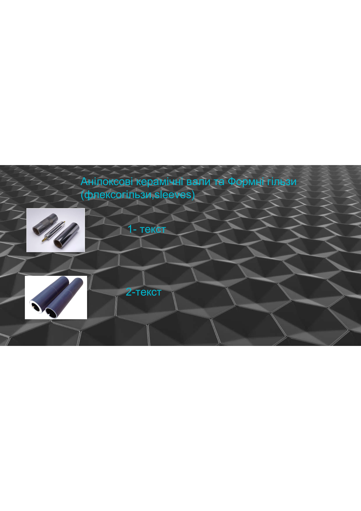
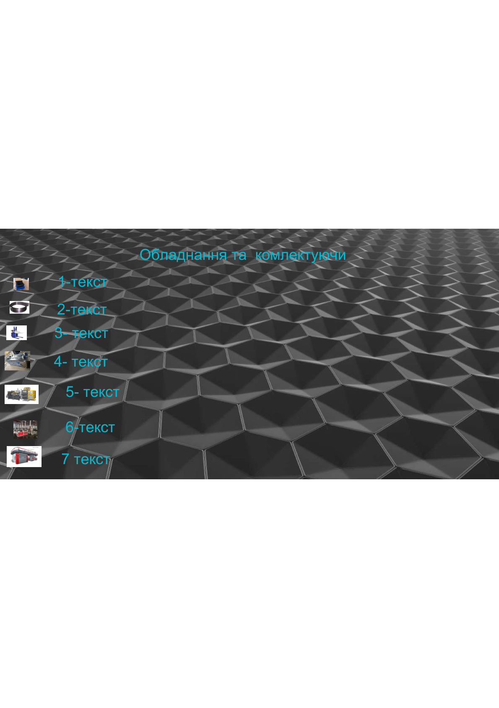

| Параметр | Значення |
|---|---|
| Тип проекту | B2B корпоративний сайт + каталог |
| Технологічний стек | Django 5+, HTMX, PostgreSQL |
| Цільова аудиторія | Друкарні, дистриб'ютори, виробничі компанії |
| Мови | Українська |
| Контакти | +38 (066) 988-32-42, nikolajcornejko@gmail.com |
| Слоган | Ваш успіх – наш пріоритет |
Компанія спеціалізується на постачанні обладнання та комплектуючих для: - Друкарень (флексографія, офсет, глибокий друк) - Виробників упаковки (паперової, пластикової, полімерної) - Текстильної промисловості
Призначення: Металеві циліндри для видавлювання текстури, візерунків, логотипів на рулонних і листових матеріалах
Типи: - Сталь по сталі (максимальна чіткість малюнку) - Сталь по гумі (для м'яких та еластичних матеріалів) - Сталь по паперу (для серветок, туалетного паперу)
Матеріали обробки: - Папір та картон - Полімери та плівки - Натуральна шкіра - Метали та фольга - Текстиль та неткані матеріали
Основні параметри для фільтрації: - Діаметр вала - Ширина вала - Матеріал поверхні - Тип тиснення
Призначення: Вали для переносу фарби на друкарську форму (флексографія)
Підкатегорія 2.1: Анілоксові вали
Типи: - Хромовані анілоксові вали - Керамічні анілоксові вали
Параметри підбору: - Фарба (яку використовуєте) - Форма осередків (розмір та геометрія) - Об'єм осередків (µl/см²) - Лініатура анілоксового вала (lin/cm)
Переваги кераміки: - Висока твердість матеріалу - Щільне покриття - Корозійна стійкість - Точна передача чорнила - Гладкі стінки осередків - Легко чистити
Підкатегорія 2.2: Формні гільзи (Sleeves)
Призначення: Використовуються для наклейки флексоформ на робочу поверхню
Матеріал: Твердість 95 Sh.A
Переваги: - Міцна полегшена конструкція - Стабільність розмірів та стійкість до нагрівання - Прискорюють та спрощують переналагодження тиражу
Опціональні компоненти: - Монтажні смужки (стопорні кільця) - Замки із нержавіючої сталі - Розмітка: поздовжня (1, 2 або 4 смуги) та поперечна
Параметри: - Товщина стінки: 3–100 мм - Низька вага при високій жорсткості - Широкий діапазон доступних розмірів - Низьке осьове биття
Матеріал: Сталевий дріт, акуратно встановлений та рівномірно розташований
Переваги: - Ефективне очищення - Не пошкоджує анілоксові вали - Виготовлено з імпортної високоякісної сировини
Призначення: Дозування та передача фарби з форми на матеріал, що запечатується
Параметри: - Товщина ножа: 0.15–0.20 мм - Фінішне лезо у вигляді ламелі (для високої якості друку) - Чим тонше ламель, тим чистіше знімає фарбу
Вантажопідйомність: 1000 кг / 1500 кг
Застосування: Переміщення котушок великого діаметра
Особливості: - Усі органи керування розташовані на ручці - Захист оператора від роздавлювання - Захист ведучого колеса - Блокування двигуна (гальмо стоянки) - Клапан захисту від падіння (гідравлічні труби) - Можливість оснащення бічним усуненням
Технічні деталі: - Акумулятори з вбудованим зарядним пристроєм - Тримач рулону плоский з гідравлічним керуванням - Аварійний пристрій для зупинки машини
Призначення: Очищення засохлої фарби в комірках анілоксових валів (особливо при використанні водних фарб)
Переваги: - Продовжує строк служби анілоксового вала - Значно менше накопичується фарби при регулярному використанні - Виконує качісне чищення, що неможливо досягти вручну
Призначення: Формування термоусадочного етикетування
Основні органи машини: - Розмотування - Приведення - Формування - Склеювання - Намотування - Детектування
Можна обробляти матеріали: ПВХ, ПЕТГ, ОПС, ХІТ та інші типи плівки
Характеристики: - Висока швидкість виробництва - Ефективне прискорення та уповільнення - Висока надійність автоматизації - Інтегрована конструкція - Відповідає стандартам промислової безпеки
Призначення: Формування, зварювання, різання та виготовлення пластикових і паперових пакетів
Матеріали: ПНД, ПВД, ПП, папір
Основні типи:
| Тип | Застосування |
|---|---|
| Пакети «майка» | Автоматичний виробничий пресс для формування ручок |
| Пакети фасування | Нарізування в рулонах (перфорація) або в стопках |
| Пакети Wicket | Упаковування хліба, курки, гігієнічних товарів |
| Тришовні пакети та Doy-pack | Упаковка зі стійким дном або зіп-замком |
| Мішки для сміття | Щільні мішки, часто з намотуванням та зав'язками |
Призначення: Друкарське обладнання для нанесення малюнка на рулонні матеріали рідкими швидковисихаючими фарбами
Матеріали: Плівка, папір, фольга
Основні типи:
| Тип | Опис | Застосування |
|---|---|---|
| Ярусна (Stack) | Друковані секції розташовані один над одним | Простий друк, легко переналаштовується, найдешевше |
| Планетарна (Central Impression) | Всі секції навколо одного центрального циліндра | Тонкі розтягні плівки, висока точність поєднання кольорів |
| Лінійна (In-line) | Секції послідовно в одну лінію | Щільний картон, самоклеючі етикетки, вбудовування в екструдери |
┌─────────────────────────────────────┐
│ ГОЛОВНА СТОРІНКА (Home) │
├─────────────────────────────────────┤
│ • Логотип, контакти (тел., email) │
│ • Героїчна секція + слоган │
│ • CTA: Каталог, Зв'язатися │
└─────────────────────────────────────┘
↓
┌─────────────────────────────────────┐
│ ОСНОВНІ РОЗДІЛИ САЙТУ │
├─────────────────────────────────────┤
│ │
│ 1. ПРО КОМПАНІЮ (About) │
│ • Коротка історія │
│ • Клієнтська база │
│ • Переваги роботи │
│ │
│ 2. КАТАЛОГ (Catalog) │
│ ├─ Вали тиснення │
│ ├─ Анілоксові вали & Sleeves │
│ └─ Обладнання & Комплектуючи │
│ │
│ 3. ПОШУК & ФІЛЬТРИ (Search) │
│ • Глобальний пошук │
│ • Фільтри за параметрами │
│ • Сортування │
│ │
│ 4. ПРАЙС-ЛИСТ (Pricing) │
│ • Таблиця з артиклами │
│ • Завантаження XLSX/PDF │
│ │
│ 5. ТЕХНІЧНА ДОКУМЕНТАЦІЯ (Docs) │
│ • Каталоги за категоріями │
│ • Техспеції, таблиці │
│ • Завантаження PDF │
│ │
│ 6. КОНТАКТИ (Contact) │
│ • Форма запиту │
│ • Телефон, Email │
│ • Карта (якщо є офіс) │
│ │
│ 7. FOOTER │
│ • Навігація, контакти │
│ • Соцмережі, Policies │
│ │
└─────────────────────────────────────┘
URL: /products/pressing-rollers/
Елементи сторінки: - Заголовок та опис категорії - Карточки продуктів у сітці (2–3 колони) - Кожна карточка містить: - Зображення вала - Артикль - Назва / модель - Короткий опис - Основні параметри (таблиця) - CTA: «Запит коммерційної пропозиції» - Посилання на техдокументацію
Фільтри: - За типом (Сталь-Сталь, Сталь-Гума, Сталь-Папір) - За матеріалом обробки (Папір, Полімери, Шкіра, Метали, Текстиль) - За розміром (діаметр, ширина)
Сортування: - За назвою (A–Z) - За популярністю - За новизною
URL: /products/anilox-rollers/
URL: /products/equipment/
Групування (аккордеон / вкладки): 1. Щітки для чищення 2. Ракельні ножі 3. Електронні навантажувачі 4. Машини для миття 5. Машини склеювання та намотування 6. Пакеторобні машини 7. Флексографічні машини
Для кожного обладнання: - Детальне фото - Параметри (потужність, швидкість, вага, вантажопідйомність) - Характеристики та переваги - Можливі матеріали обробки - Посилання на техдокументацію - Брошури та інструкції (PDF)
URL: /pricing/
| Артикль | Найменування | Параметри | Вартість | Дія |
|---|---|---|---|---|
| AX-0001 | Анілокс 150 lin | 150 lin/cm, 15 µl/см² | За запитом | Запит пропозиції |
| VT-0024 | Вал тиснення | Ø800 мм, ш. 500 мм | За запитом | Запит пропозиції |
URL: /docs/
URL: /contact/
[ Ваше ПІБ ]
[ Компанія ]
[ Email ]
[ Телефон ]
[ Категорія запиту ] ← Dropdown:
• Консультація
• Замовлення
• Сервіс
• Рекламація
• Інше
[ Текст повідомлення ]
[ Прикріпити файл ] ← Optional
[ Відправити ]
| Пристрій | Ширина | Лейаут | Меню |
|---|---|---|---|
| Desktop | 1440px+ | 3 колони (де потрібно) | Горизонтальне |
| Планшет | 768–1439px | 2 колони | Бургер |
| Мобіль | 320–767px | 1 колона, вертикальний скрол | Бургер, повна адаптація |
iOS Safari: Тестування на малих екранах, edge-to-edge сумісність, безпека viewport
Django 5+, Python 3.12+
PostgreSQL
src/
├── config/ # Налаштування
│ ├── settings/
│ │ ├── base.py
│ │ ├── develop.py
│ │ ├── production.py
│ │ └── test.py
│ ├── urls.py
│ └── wsgi.py
│
├── products/ # Каталог товарів
│ ├── models.py
│ ├── views.py
│ ├── forms.py
│ ├── urls.py
│ └── templates/
│ ├── product_list.html
│ ├── product_detail.html
│ └── search_results.html
│
├── pricing/ # Прайс-лист
│ ├── models.py
│ ├── views.py
│ └── templates/
│ └── pricing_list.html
│
├── docs/ # Технічна документація
│ ├── models.py
│ ├── views.py
│ └── templates/
│ └── docs_list.html
│
├── contact/ # Контакти та форма
│ ├── models.py
│ ├── forms.py
│ ├── views.py
│ ├── urls.py
│ └── templates/
│ └── contact_form.html
│
├── pages/ # Статичні сторінки
│ ├── views.py
│ └── templates/
│ ├── home.html
│ └── about.html
│
└── static/
├── css/
│ ├── main.css
│ ├── components/
│ │ ├── header.css
│ │ ├── card.css
│ │ ├── table.css
│ │ └── forms.css
│ └── responsive/
│ ├── tablet.css
│ └── mobile.css
├── js/
│ ├── main.js
│ ├── search.js
│ ├── filter.js
│ ├── modal.js
│ └── forms.js
└── images/
Нижче наведені скриншоти з вихідних PDF документів:



Цей документ описує повну карту веб-сайту для Nikolaj Корнейко. Сайт буде:
✅ Професійний — B2B дизайн, чистий інтерфейс
✅ Функціональний — Каталог, пошук, фільтри, контакти
✅ Адаптивний — Повна мобільна, планшетна та десктопна підтримка
✅ Швидкий — Django + HTMX, без надмірних бібліотек
✅ Масштабований — Легко розширюється на нові категорії товарів
Готово до розробки!
Карта сайту версія 1.0 — Червень 2026